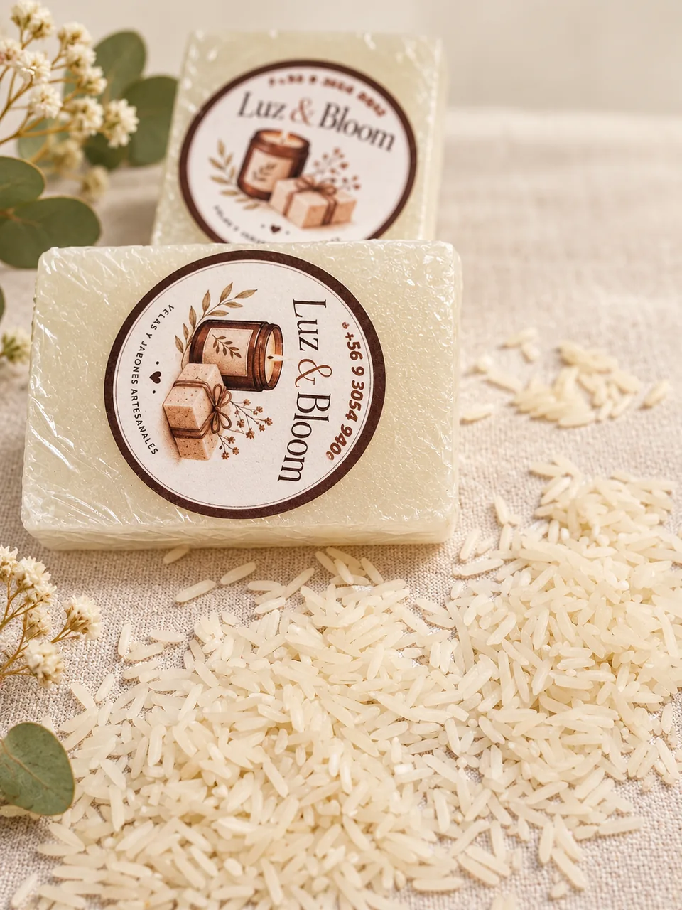
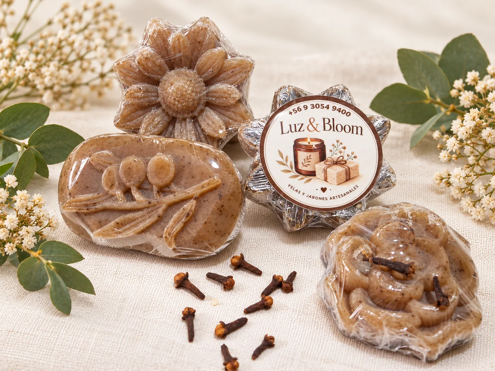
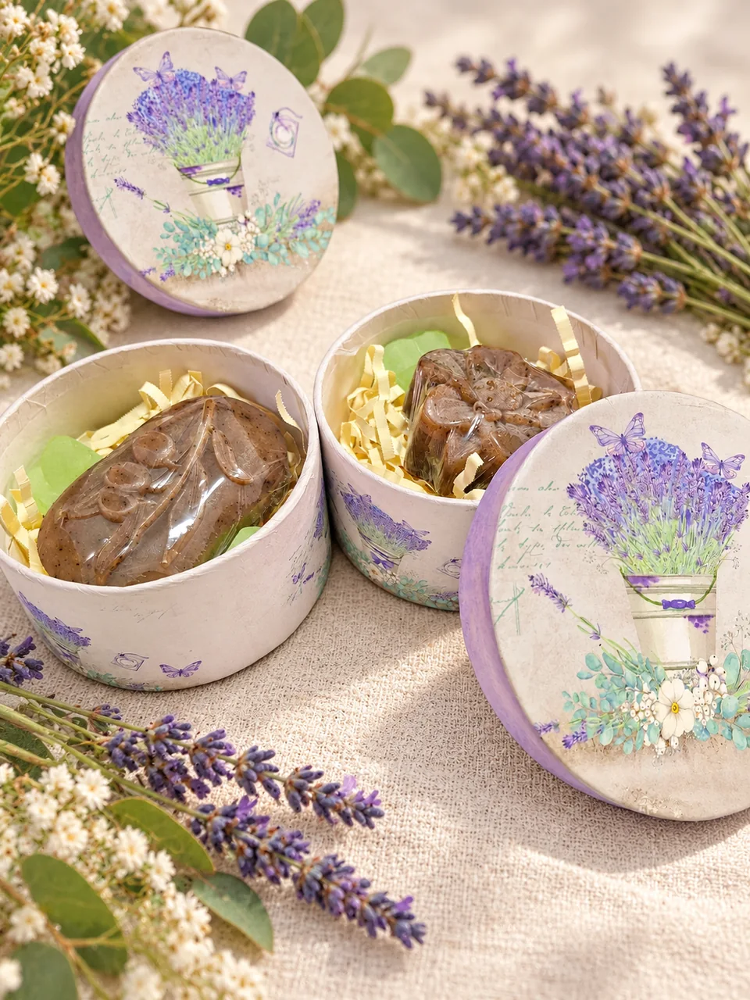
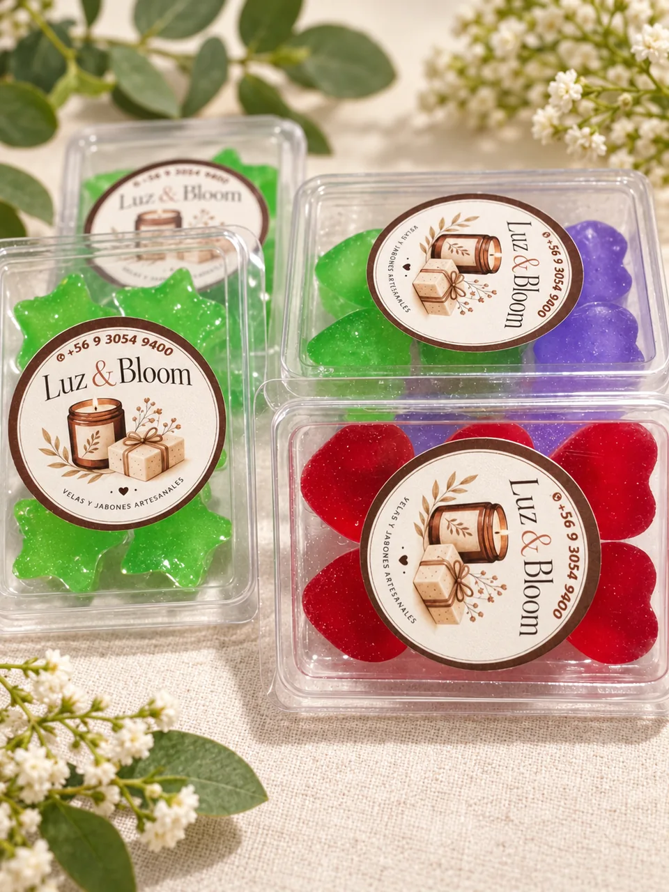
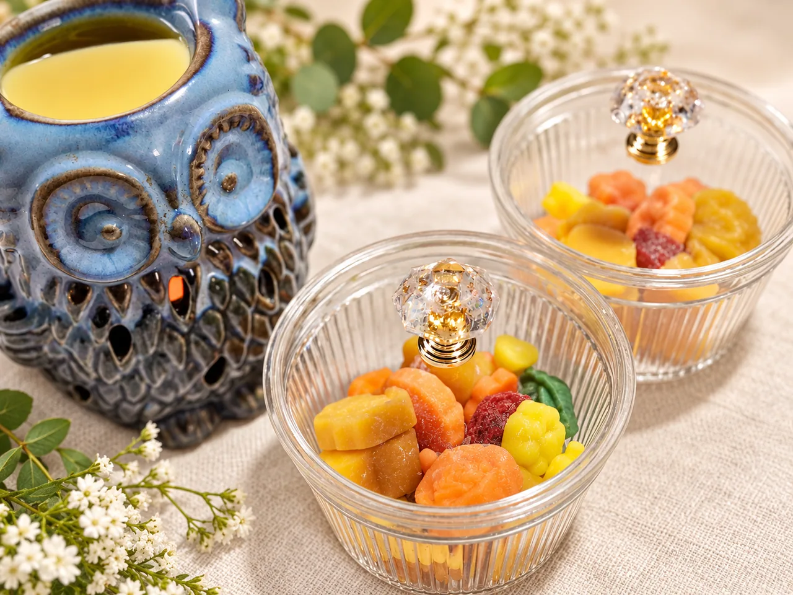
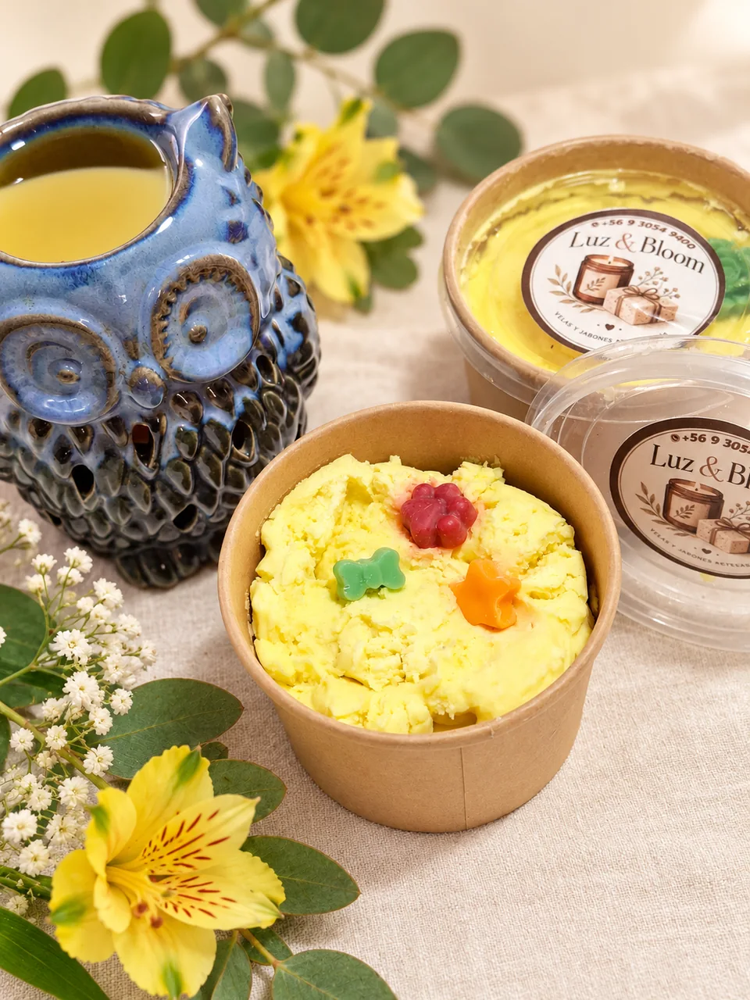
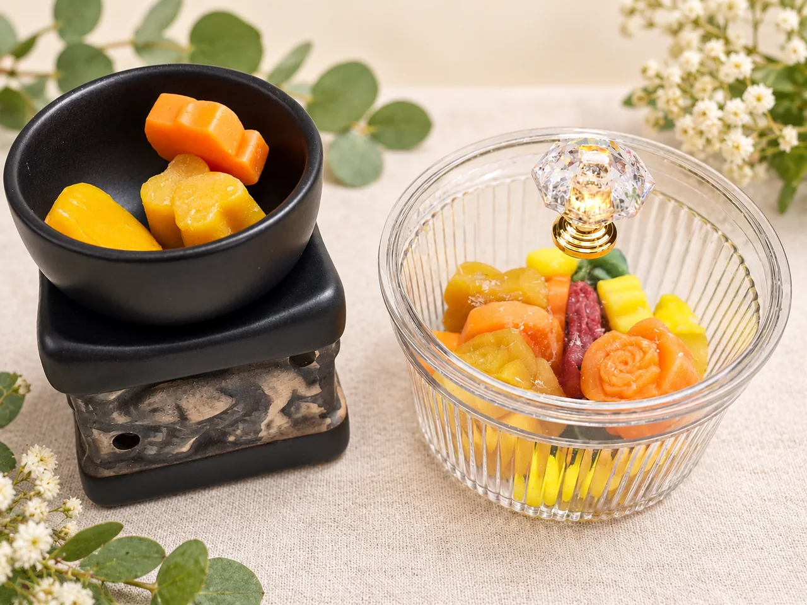
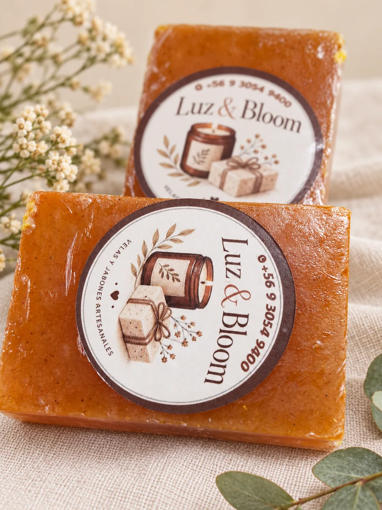
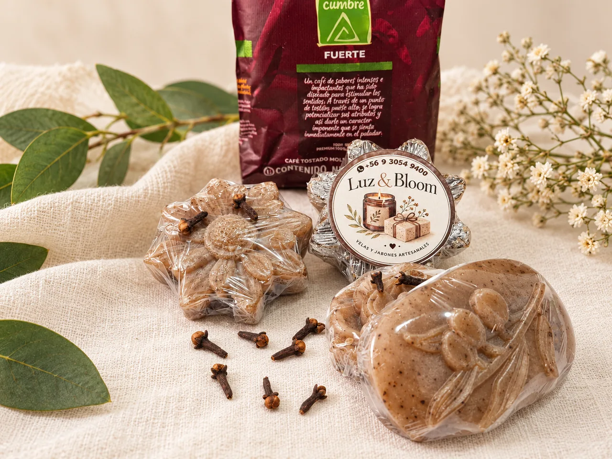

Jabón de lavanda

Un jabón de aroma herbal y floral, con el color
característico de la lavanda y flores secas que forman
parte de su acabado artesanal.
- Ingredientes: Lavanda y esencia de lavanda sobre una base de jabón.
- Aroma: Herbal y floral.
- Beneficios: Limpia la piel y aporta el aroma de la lavanda durante el lavado.
- Presentación: Barra violeta con detalles de flores secas.
Consultar por WhatsApp
Jabón de arroz

Hecho a base de arroz, en una barra de tono claro y
acabado sencillo. Una alternativa para quienes
prefieren un jabón sin decoraciones.
- Ingredientes: Arroz sobre una base de jabón.
- Características: Barra de color claro.
- Beneficios: Ayuda a retirar la suciedad de la piel durante el lavado.
- Presentación: Barra rectangular con envoltorio individual.
Consultar por WhatsApp
Jabón de café y clavo de olor

El aroma del café se mezcla con las notas especiadas
del clavo de olor. Jabones de tono marrón, moldeados
con formas de flores y hojas.
- Ingredientes: Café y clavo de olor sobre una base de jabón.
- Aroma: Café con notas cálidas y especiadas.
- Beneficios: Limpia la piel y aporta un aroma de café y especias durante su uso.
- Presentación: Piezas con formas de flores y hojas, envueltas individualmente.
Consultar por WhatsApp
Jabones para regalo

Nuestros jabones también se presentan en cajas decoradas,
listos para regalar. Un detalle sencillo para un cumpleaños,
un agradecimiento o una ocasión especial.
- Contenido: Jabón artesanal con envoltorio individual.
- Variedades: Según disponibilidad.
- Presentación: Caja redonda con motivos florales.
Consultar por WhatsApp
Jabones aromáticos de colores

Jabones de distintos colores para usar en el baño
o combinar en un regalo.
- Ingredientes: Base de jabón, fragancia y color según la variedad.
- Aroma: Varía según la pieza.
- Beneficios: Limpian la piel y aportan aroma durante el lavado.
- Presentación: Piezas artesanales en distintos colores.
Consultar por WhatsApp
Jabones aromáticos florales

Una selección de jabones con perfume floral.
Puedes combinar varias piezas si quieres armar un regalo.
- Ingredientes: Base de jabón y fragancia floral.
- Aroma: Floral.
- Beneficios: Limpian la piel y perfuman el lavado con notas florales.
- Presentación: Piezas artesanales de la línea floral.
Consultar por WhatsApp
Jabón floral para el baño

Un jabón de aroma floral pensado para la ducha
o el baño de todos los días.
- Ingredientes: Base de jabón y fragancia floral.
- Aroma: Floral.
- Beneficios: Limpia la piel y aporta un perfume floral durante el baño.
- Presentación: Pieza individual de jabón artesanal.
Consultar por WhatsApp
Jabón aromático floral

Una pieza individual con perfume de flores,
para dejar junto al lavamanos o sumar a un regalo.
- Ingredientes: Base de jabón y fragancia floral.
- Aroma: Floral.
- Beneficios: Limpia la piel y aporta aroma durante el lavado.
- Presentación: Jabón aromático individual.
Consultar por WhatsApp
Jabón en barra de manzanilla

Una barra con aroma suave a manzanilla para el lavado diario.
- Ingredientes: Manzanilla sobre una base de jabón.
- Aroma: Herbal, con una nota floral suave.
- Beneficios: Limpia la piel y aporta el aroma de la manzanilla durante el lavado.
- Presentación: Jabón artesanal en barra.
Consultar por WhatsApp
Jabón de café

Un jabón artesanal con el aroma tostado del café.
- Ingredientes: Café sobre una base de jabón.
- Aroma: Café tostado.
- Beneficios: Limpia la piel y aporta notas de café durante el lavado.
- Presentación: Pieza de jabón artesanal.
Consultar por WhatsApp